100年以上の歴史を持つ、出演者が女性だけの劇団です。
花・月・雪・星・宙の5つの組があり、
宝塚大劇場・東京宝塚劇場の2つの専用劇場を中心に、
年間を通して各地でも公演を行っています。
専用劇場ではオーケストラの生演奏なので迫力満点です。
各組の紹介
.png)
永久輝せあ 星空美咲
東京宝塚劇場にて公演中
(8/16~9/28)
鳳月杏 天紫珠李
宝塚大劇場にて公演中
(7/26~9/7)
東京宝塚劇場(10/4~11/16)

朝美絢 夢白あや
二組に分かれて公演中
御園座(8/14~9/4)
宝塚バウホール(8/19~8/31)
暁千星 詩ちづる
二組に分かれて稽古中
全国ツアー(9/27~10/24)
宝塚バウホール(9/30~10/27)
桜木みなと 春乃さくら
次回作に向けて稽古中
宝塚大劇場(9/13~10/26)
東京宝塚劇場(11/22~1/4)
特定の組に所属せず
各組の舞台に特別出演する
スペシャリスト集団
宝塚の舞台は一本物・二本立てがあります。
一本物とは、1つの作品を最初から最後まで通して上演。
二本立てとは、前半が芝居、後半がレビュー。
1回で宝塚の魅力を二度楽しめます。
おすすめ作品
-
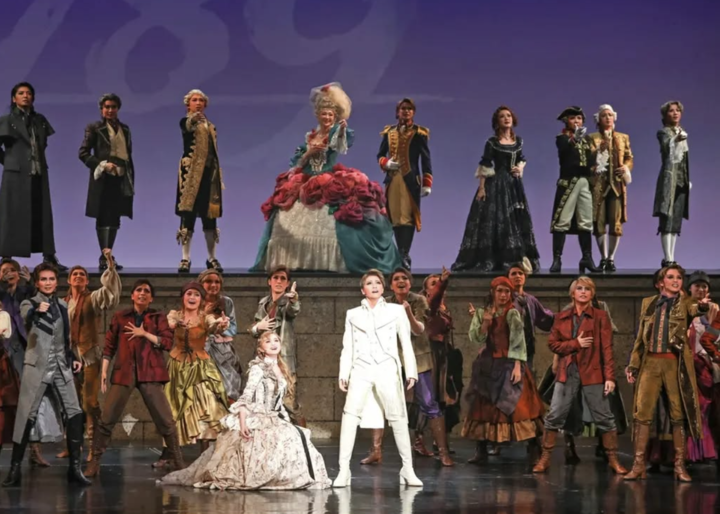
1789
－バスティーユの恋人たち－迫力ある群舞や歌メイン
身分を超えた恋が物語 -
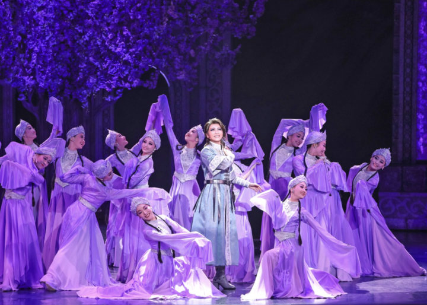
ディミトリ
～曙光に散る、紫の花～女王と若き王族の切ない恋
切なくも美しい物語 -
エリザベート
－愛と死の輪舞－オーストリア皇后の生涯を描いた作品
愛と死の物語 -
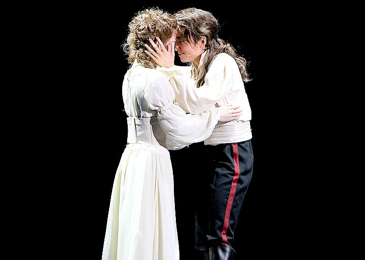
ひかりふる路
〜革命家、マクシミリアン・ロベスピエール〜運命に翻弄された革命家の生涯
-
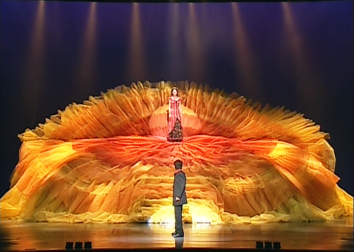
激情
－ホセとカルメン－青年ホセの運命の物語
愛と嫉妬の悲劇 -
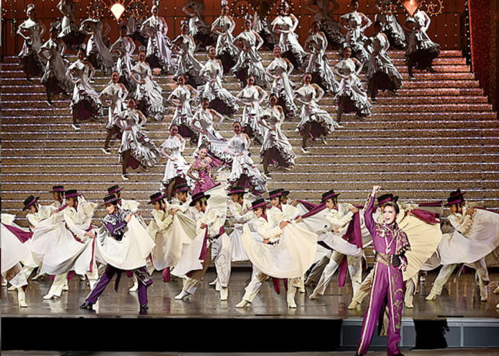
Gran Cantante!!
スペインの祭典のようなショー
-
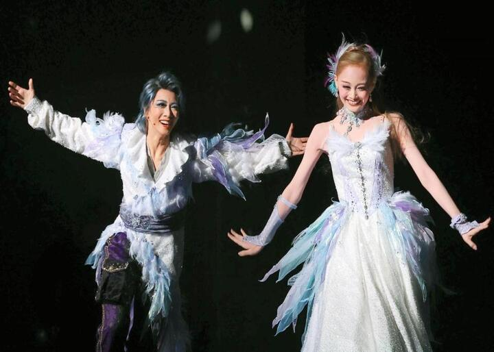
JAGUAR BEAT
－ジャガービート－暗転のないノンストップショー
-
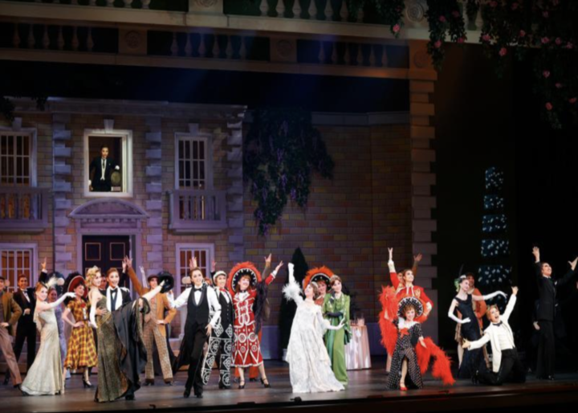
ME AND MY GIRL
明るく軽快なコメディ
幸せな余韻が残る結末 -
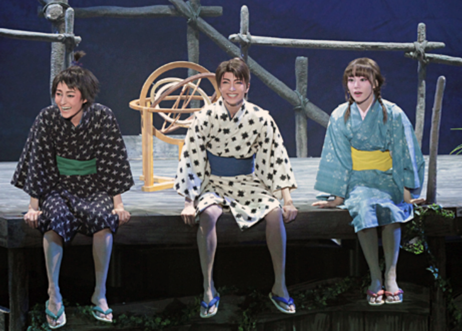
星逢一夜
一夜の運命的な出会い
切なくも美しい恋を育む物語 -
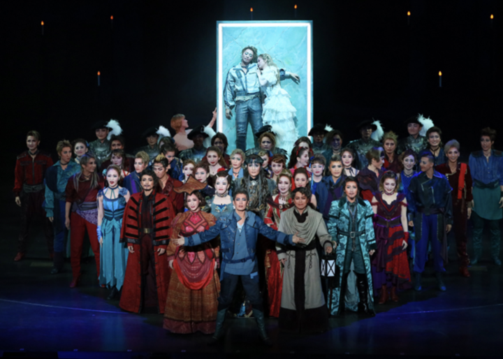
ロミオとジュリエット
世界で有名な物語
愛し合う若い二人の悲恋物語 -
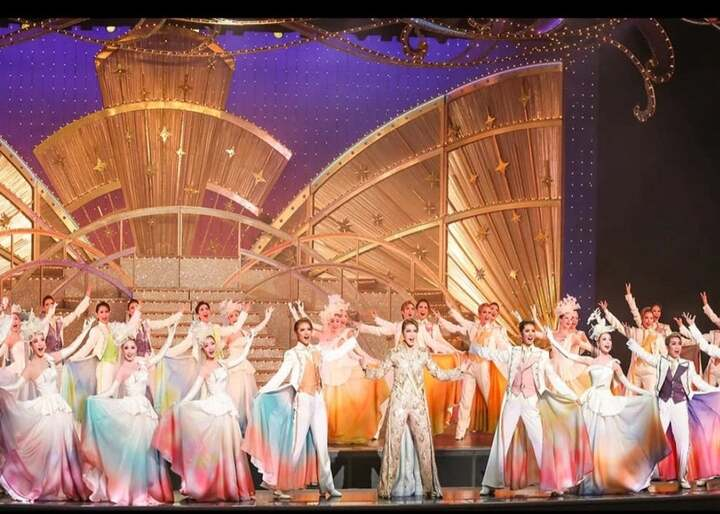
エスペラント！
美しい世界観と素敵な音楽
-
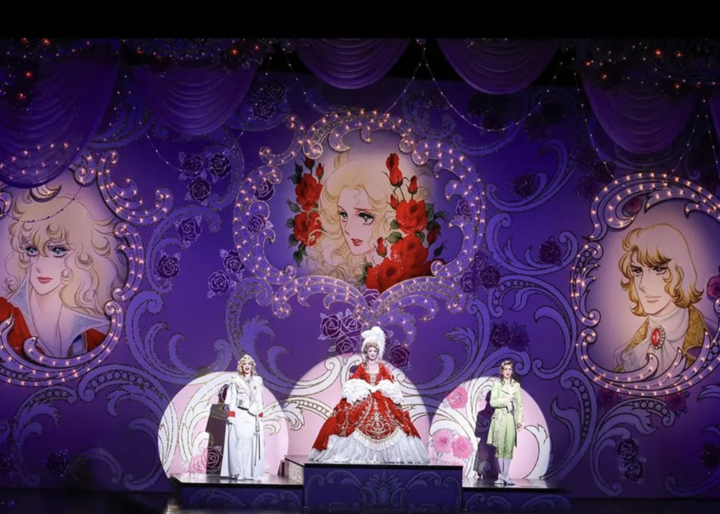
ベルサイユのばら
－フェルゼン編－宝塚といえばコレ！！
涙なしには見られない
気になる写真はありましたか？
私自身、星組推しなので星組率が高いですが
他にもたくさんの作品があります！
一度、劇場に足を運んでみてください！
アクセス
宝塚大劇場
〒665-8558
兵庫県宝塚市栄町１丁目１−５７
東京宝塚劇場
〒100-0006
東京都千代田区有楽町１丁目１−３
東京宝塚ビル 東京宝塚ビル内